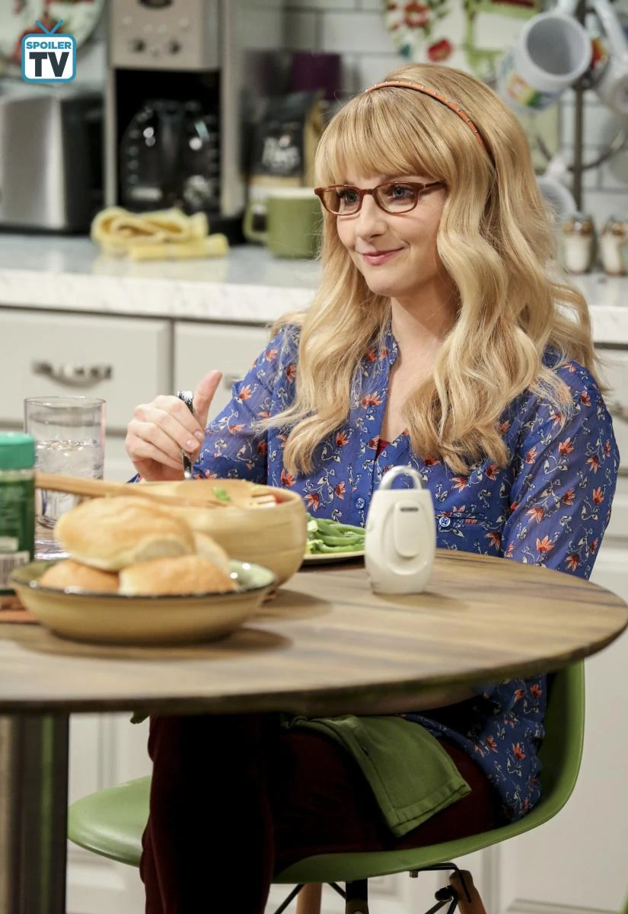
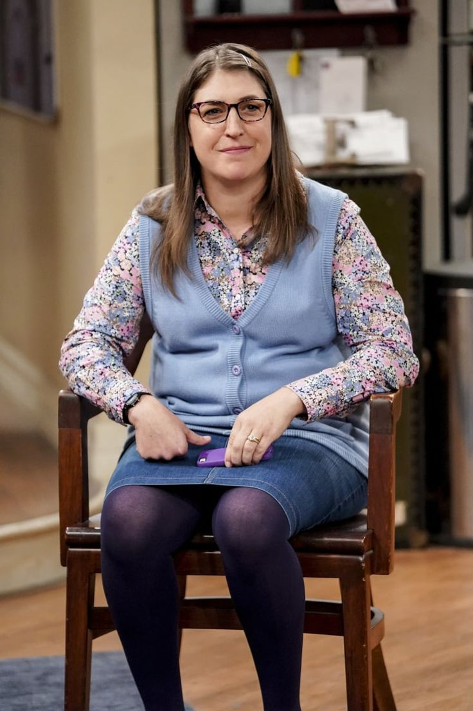

|  |
Bernadette RostenkowskiA young woman who initially is a co-worker at The Cheesecake Factory with Penny to pay her way through graduate school, where she is studying microbiology. Bernadette is introduced to Howard by Penny; at first, they do not get along, apparently having nothing in common. They date and later get engaged and married. Although generally a sweet and good-natured person, Bernadette has a short fuse and can be vindictive and lash out when provoked. |

Team Girls
|  |
Amy Farrah FowlerA woman selected by an online dating site as Sheldon's perfect mate,Amy is from Glendale, California. While she and Sheldon initially share social cluelessness, after befriending Penny and Bernadette, she eventually becomes more interested in social and romantic interaction. Her relationship with Sheldon slowly progresses to the point where Sheldon considers her his girlfriend, and eventually, they get married. Amy believes she and Penny are best friends, a sentiment that Penny does not initially share. Amy has a Ph.D. in neurobiology. |